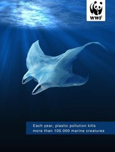
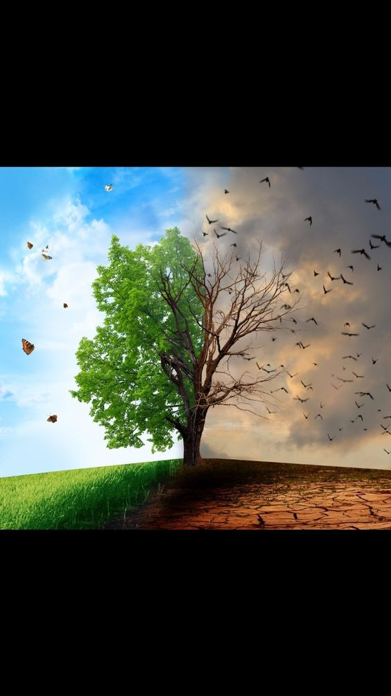
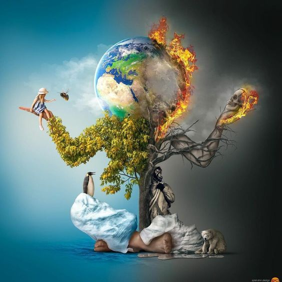

ÇEVRE NEDİR?

Çevre; dünya üzerinde yaşamını sürdüren canlılarının hayatları
boyunca ilişkilerini sürdürdüğü dış ortamdır. Çevre, bize
geçmişten kalan bir miras değil; korunması, geliştirilmesi ve
gelecek nesillere en güzel şekilde devredilmesi gereken bir
emanettir. Okulumuz, evimiz, mahallemiz, şehrimiz, parklar,
ormanlar; buralarda yaşayan insanlar ve tüm hayvanlar; nehir,
göl, deniz, orman, hava, su ve diğer tüm canlı cansız varlıklar
çevremizi oluşturur. Kısaca, içinde yaşadığımız ortama “çevre”
denir. İnsanlar da diğer tüm canlılarla birlikte doğayı tahrip
etmeden, çevresine saygılı bir şekilde, uyum içinde
yaşamalıdırlar.
Çevre hakkı en temel insan haklarından biridir. Bu nedenle
çevrenin korunmasına yönelik yapılacak her faaliyet, atılacak
her adım insanlık için yapılmış olacaktır. Sağlıklı bir toplum
oluşturulmasının ancak çevre sorunlarının çözülmesiyle mümkün
olacağı, bugün dünyada kabul görmüş bir gerçektir.
ÇEVRE KİRLİLİĞİ NEDİR ?
Çevrenin canlı ögelerinin hayat aktivitelerini olumsuz yönde etkileyen, cansız ögelerin üzerinde ise yapısal zararlar meydana getiren ve niteliklerini bozan yabancı maddelerin hava, su ve toprağa yoğun bir şekilde karışması olayına “çevre kirliliği” adı verilmektedir. Hızla artan insan nüfusu ihtiyaçları arttırmakta, insan eliyle yaratılan kirliliğin tabiata ve çevreye verdiği zararın boyutu her geçen gün artmaktadır. Yaşamı daha mükemmel bir hale getirmek, daha sağlıklı ve uzun bir ömür sağlayabilmek amacına dönük bazı gelişmelerin, kırsal ve kentsel alanlarda doğal kaynaklarını bozduğu, su, hava, toprak kirlenmesine yol açtığı, bitki ve hayvan varlığına ve sağlığına zarar verdiği açıkça görülebilen bir gerçek haline gelmiştir.
ÇEVRE KİRLİLİĞİ ÇEŞİTLERİ NELERDİR ?
Çevre kirliliği çeşitleri genel olarak; hava kirliliği su kirliliği, toprak kirliliği, gürültü kirliliği ve görüntü kirliliği olarak sınıflandırılır. Çevre kirlilikleri doğaya zarar vererek doğrudan veya dolaylı olarak doğada yaşamını sürdüren tüm canlıların zarar görmesine neden olmaktadır. Günümüzde görüntü kirliliği ve ışık kirliliği de çevre kirlilikleri olarak karşımıza çıkmakta, bu çevresel kirlilikler yine insanlar tarafından oluşturularak insanların ve diğer canlıların zarar görmesine neden olmaktadır. Çevrenin kirlenmesi, ekosistemin dengelerini bozarak iklimsel değişikliklere sebep olmaktadır.
PEKİ BİZ NELER YAPABİLİRİZ ?
Dünya Sağlık Örgütü raporuna göre her yıl 1,7 milyon insan sağlıksız çevre koşulları sebebiyle kansere yakalanırken, 12,6 milyon insan ise çevre kirliliğine bağlı hastalıklar sebebiyle hayatını kaybediyor. Çevre kirliliğinin bir çeşidi olan hava kirliliği ise yılda 4,2 milyon insanın ölümünden sorumlu. Sadece insan değil diğer canlıların da yaşamını tehlikeye sokan çevre kirliliğini önlemek için neler yapabiliriz? Çevre kirliliği çevrenin doğal olmayarak insan eliyle bozulmasıdır. Çevre kirliliğinin bu denli artmasının sebeplerinden başlıcaları hızla gelişen teknoloji ve sanayi, nüfus artışı, doğal kaynakların bilinçsizce kullanılmasıdır. Doğa kendini yenileyen ve temizleyen bir güzelliğe sahipken çevre kirliliği bu sebeplerle birlikte kaçınılmaz hale gelmiştir. Çevre kirliliğine sebep olan bu etkenleri tamamen durdurmamız mümkün değildir, fakat çevreye olan etkilerini en aza indirmek için bazı önlemler alabiliriz.
ÇEVRE NEDİR ?

Çevre;
dünya üzerinde yaşamını sürdüren canlılarının hayatları
boyunca ilişkilerini sürdürdüğü dış ortamdır. Çevre, bize
geçmişten kalan bir miras değil; korunması, geliştirilmesi ve
gelecek nesillere en güzel şekilde devredilmesi gereken bir
emanettir. Okulumuz, evimiz, mahallemiz, şehrimiz, parklar,
ormanlar; buralarda yaşayan insanlar ve tüm hayvanlar; nehir,
göl, deniz, orman, hava, su ve diğer tüm canlı cansız
varlıklar çevremizi oluşturur. Kısaca, içinde yaşadığımız
ortama “çevre” denir. İnsanlar da diğer tüm canlılarla
birlikte doğayı tahrip etmeden, çevresine saygılı bir şekilde,
uyum içinde yaşamalıdırlar.
Çevre hakkı
en temel insan haklarından biridir. Bu nedenle çevrenin
korunmasına yönelik yapılacak her faaliyet, atılacak her adım
insanlık için yapılmış olacaktır. Sağlıklı bir toplum
oluşturulmasının ancak çevre sorunlarının çözülmesiyle mümkün
olacağı, bugün dünyada kabul görmüş bir gerçektir.
ÇEVRE KİRLİLİĞİ NEDİR ?

Çevrenin canlı ögelerinin hayat aktivitelerini olumsuz yönde
etkileyen, cansız ögelerin üzerinde ise yapısal zararlar
meydana getiren ve niteliklerini bozan yabancı maddelerin
hava, su ve toprağa yoğun bir şekilde karışması olayına
“çevre kirliliği” adı verilmektedir. Hızla artan insan
nüfusu ihtiyaçları arttırmakta, insan eliyle yaratılan
kirliliğin tabiata ve çevreye verdiği zararın boyutu her geçen
gün artmaktadır. Yaşamı daha mükemmel bir hale getirmek, daha
sağlıklı ve uzun bir ömür sağlayabilmek amacına dönük bazı
gelişmelerin, kırsal ve kentsel alanlarda doğal kaynaklarını
bozduğu, su, hava, toprak kirlenmesine yol açtığı, bitki ve
hayvan varlığına ve sağlığına zarar verdiği açıkça görülebilen
bir gerçek haline gelmiştir.
Canlıların hayatlarını sürdürürken iç içe oldukları dünya,
aynı zamanda birbirleriyle etkileşim ve ilişki içerisinde
oldukları bir dış ortam oluşturmaktadır. Bu dış ortama ise
çevre denmektedir. Sadece bizimle var olmayıp,
geçmişten günümüze ve geleceğe uzanan bir döngü içerisinde
çevrevarlığını sürdürmektedir. Doğal unsurlar üzerine
inşa ettiğimiz çevremiz bizleri hayatta tutan temel
ihtiyaçlarımızı da içinde barındırmaktadır. Tüm ihtiyaçlar
denge içerisinde doğal çevremizden karşılandığı müddetçe ve
karşılığında çevremiz zarar görmediği sürece devamlılığını
sağlayabileceğimiz bir ortam oluşturmuş oluruz. Aksi
gerçekleştiriğinde ise bu denge bozulacak ve yeryüzündeki tüm
canlıların yaşamı için tehdit oluşturacaktır.

Çevre kirliliği temelde insan ve doğa sebepli gerçekleşiyor olsa da ana faktör insan eliyle gerçekleştirilen faaliyetler diyebiliriz. Nüfus artışıyla birlikte insanların ihtiyaçlarının daha hızlı karşılayabilmek için endüstriyelleşme beraberinde atık problemlerini de ortaya çıkarmış, ayrıştırılmadan doğaya bırakılan endüstri atıkları su kirliliğine sebep olduğu gibi doğal yaşam alanlarını da tehdit etmektedir.
Çevre kirliliğinin en önemli nedenleri:
- -Hızlı nüfus artışı,
- -Plansız kentleşme
- -Plansız endüstrileşme
- -Doğal kaynakların ölçüsüz kullanılması olarak sıralanabilir
- -Orman tahripleri
- -Bitki örtüsü tahribi ve aşırı hayvan otlatmacılığı
- -Şehir gürültüsü
- -Teknoloji atıkları
- -Yanlış arazi kullanımı
- -Yangın, sel, heyelan gibi doğal afetler
- -Aşırı tüketim ve buna bağlı atık kirliliği
- -Motorlu kara, deniz ve hava araçları
- -Petrol atıkları
- -Kontrolsüz endüstri atıkları
- -Aşırı doğal kaynak tüketimi
- -Kötü gazların havaya salınımı
- -Kuraklık
Çevre Kirliliği Sonuçları
Çevre kirliliği sadece insanlar için değil, yeryüzünde yaşayan her canlı için tehlike arz etmektedir. Öyle ki kontrolsüz hale gelen çevre kirliliği, geri dönülmez sonuçlara sebep olabilir. Çevre kirliliği ile dünyanın iklimi ve coğrafyasının değişmesi, su kaynakları gibi doğal kaynakların azalması ya da yok olması temel sonuçlardandır. Bunlara bağlı olarak enerji kıtlığı,beslenme sorunları, canlı çeşitliliğinin azalması, toprakların kaybı, sağlık problemleri de gelişerek canlı yaşamının devamlılğını tehdit eder. Sadece insanlar için değil birçok kara ve deniz canlısı için de yaşam alanlarının daralmasına sebep olabilmekte. Doğal çevrenin yaşanılır olmaktan çıkması, sürdürülebilir hayatın devamlılığını engellemektedir. Daha yaşanır bir hayat için çevre kirliliğine karşı bireysel ve toplumsal önlemler almalı, bu önlemler devletler tarafından da desteklenmelidir.
ÇEŞİTLERİ NEDİR ?
Çevre kirliliği çeşitleri genel olarak; hava kirliliği su kirliliği, toprak kirliliği, gürültü kirliliği ve görüntü kirliliği olarak sınıflandırılır. Çevre kirlilikleri doğaya zarar vererek doğrudan veya dolaylı olarak doğada yaşamını sürdüren tüm canlıların zarar görmesine neden olmaktadır. Günümüzde görüntü kirliliği ve ışık kirliliği de çevre kirlilikleri olarak karşımıza çıkmakta, bu çevresel kirlilikler yine insanlar tarafından oluşturularak insanların ve diğer canlıların zarar görmesine neden olmaktadır. Çevrenin kirlenmesi, ekosistemin dengelerini bozarak iklimsel değişikliklere sebep olmaktadır.
TOPRAK KİRLİLİĞİ
Toprak, üzerinde ve içinde geniş bir canlı topluluğunu barındıran, bitkilerin durak yeri ve besin kaynağı olan ve belirli oranda katı, sıvı ve gaz içeren maddeler topluluğunun genel adıdır.
Canlılığın kaynağı sayılabilecek toprağın yapısına katılan ve doğal olmayan maddeler toprak kirliliğine neden olur. Böyle topraklarda bitkiler yetişmez ve toprağı havalandırarak yarar sağlayan solucan vb. hayvanlar yaşayamaz duruma gelir. Topraktan bitkilere geçen kirletici maddeler, besin zinciri yoluyla insana kadar ulaşır.
Toprak kirlenmesi, hava ve suları kirleten maddeler tarafından meydana getirilebilir. Örneğin, kükürt dioksit oranı yüksek olan bir atmosfer tabakasından geçen yağmur damlacıkları “asit yağışları” halinde toprağa gelir. Toprak içine giren bu asitli sular ağaç köklerini, bitkisel ve hayvansal toprak canlılarını zarara uğratır. Toprağın reaksiyonunu etkileyerek besin maddesi dengesini bozar, taban sularını içilmez hale getirir. Aynı şekilde çöp yığınlarından toprağa sızan sular, kirli sulama suları, gübre çözeltileri, radyoaktif maddeler, uçucu küller, ağır metaller, sanayi atıkları toprağı kirletenmadde ve kaynaklardır.

Toprak kirliğinin önlenmesi için yapılası gerekenler şunlardır
Her şeyden önce çok yaygın ve şiddetli derecedeki erozyon
devam etmektedir. Erozyonla toprak kaybının en aza indirilmesi
için başta toprakla uğraşanlar olmak üzere, herkesin toprağın
kıymetini bilmesi ve usulüne uygun kullanması gerekir.
Usulüne uygun tarım teknikleri kullanmak, orman alanlarının korunması, ağaçlandırma seferberliği gibi çalışmalara öncelik verilmelidir.
Tarımsal arazilerin amaç dışı kullanımına son verilmelidir.
Çünkü tarımsal arazilerin amaç dışı kullanımı sonucu bu
bölgelerde kurulan sanayi tesisleri ve yerleşim alanlarından çıkan
kirleticilerin özellikle yakın çevredeki tarım arazileri için önemli
bir kirlilik riski oluşturmaktadır.
Tarım ve hayvancılıkla uğraşan çiftçilere gübreleme, ilaçlama gibi konularda eğitim verilmelidir
Sanayi bölgelerinde kimyasal katı ve sıvı atıklar toprağa bırakılmamalı, maden atıkları toprak üzerinde bırakılmamalı, radyoaktif atıklar toprağa verilmemelidir.
HAVA KİRLİLİĞİ
Hava, yerkürenin etrafını saran
atmosferi meydana getiren,
normal şartlarda bileşimi
%78 azot, %21 oksijen ve
%1’de diğer gazlardan oluşan,
canlı cansız varlıklara zarar
vermeyen doğal bir kaynaktır.
Tüm canlıların hayatının
devamı için temel unsur
olan hava, solunum yoluyla
organizmaya girerek canlılık
verir. Bir insan birkaç gün aç
susuz yaşayabileceği halde
birkaç dakika hava almadan
duramaz.
Hava Kirliliği,
havada katı, sıvı ve gaz şeklindeki yabancı maddelerin insan sağlığına, canlı hayatına
ve ekolojik dengeye zarar verecek miktar, yoğunluk ve sürede atmosferde bulunmasıdır. İnsanların
çeşitli faaliyetleri sonucu meydana gelen üretim ve tüketim aktiviteleri sırasında ortaya çıkan
atıklarla hava tabakası kirlenerek, yeryüzündeki canlı hayatı olumsuz etkilenmektedir.
Zararlı gazların (özellikle kükürt bileşikleri); yağmur, bulut, kar gibi ıslak ya da yarı ıslak maddelerle
karışmaları sonucunda asit yağmurları oluşur. Asit yağmurları da bir yandan orman alanları vb. yeşil
alanları yok etmekte bir yandan da suları kirletmektedir.
Dünya üzerine düşen güneş ışınlarından çok, dünyadan yansıyan güneş ışınlarıyla ısınır. Bu yansıyan
ışınlar başta karbondioksit, metan ve su buharı olmak üzere atmosferde bulunan gazlar tarafından
tutulur, böylece dünya ısınır. Işınların bu gazlar tarafından tutulmasına da sera etkisi denir

SU KİRLİLİĞİ
Su, moleküllerinden yapılmış ve her su molekülü iki hidrojen atomu ile bir oksijen atomundan meydana gelmiştir. Özellikleri itibari ile kokusuz, renksiz, saydam bir sıvıdır. Su, tüm canlılar için hayatın devamında ya da durmasında fonksiyonu olan temel unsurlardan biridir. Dünyanın 3/4’ünün sularla kaplı olduğu, tüm canlı varlıklarda ağırlığın ortalama % 75’inin sudan oluştuğu bilinmektedir. Buradan bir canlı hayatının susuz düşünülemeyeceğini söylemek gayet mümkündür.
Ülkemizde mevcut 112 milyar m³ kullanılabilir su kaynağından yararlanma oranı yaklaşık %39 olup,bu kaynağın 32 milyar m³’ü (%74) sulamada, 7 milyar m³’ü (%15) içme ve kullanmada, 5 milyar m³’ü (%11) sanayide kullanılmaktadır. Ülkemiz, 2013 yılı itibarıyla kişi başına düşen yaklaşık 1.500m³ kullanılabilir su miktarı ile su kısıtı bulunan ülkeler arasında yer almaktadır. 2030 yılında kişi başına 1.100 m³ kullanılabilir su miktarıyla Türkiye, su sıkıntısı çeken bir ülke durumuna gelebilecektir. Su kaynaklarının korunması ve talebin en yüksek olduğu tarım sektörü başta olmak üzere sürdürülebilir kullanımını sağlayacak bir yönetim sisteminin geliştirilmesi temel amaçtır
Su Kirliliği,
histenmeyen zararlı
maddelerin, suyun niteliğini
ölçülebilecek oranda bozmalarını
sağlayacak miktar ve yoğunlukta
suya karışma olayıdır. Konutlar,
endüstri kuruluşları, termik
santraller, gübreler, kimyasal
mücadele ilaçları (pestisitler),
sanayi atık suları su kirliliğini
meydana getiren başlıca
kaynaklardır. Bunların hepsi
doğrudan doğruya veya dolaylı
olarak canlı ve cansız varlıklara
zarar vermektedir

Su kirliğinin önlenmesi için yapılası gerekenler şunlardır
Suyun yaşamın devamı açısından ne denli önemli bir kaynak olduğu bilinciyle bizden sonra gelecek
kuşaklara sağlıklı içme suyu ve yaşanabilir bir çevre bırakmamız gerektiği konusunda büyük görev
düşmektedir.
Sanayi ve evsel atıklar arıtılmadan sulara bırakılmamalıdır.Çözünmeyen kalıcı deterjanların kullanımı önlenmelidir
Kentler su kaynaklarından uzağa kurulmalıdır. Her yerleşim birimine kanalizasyon kurulmalıdır.
Kanalizasyon atıkların içme kullanma sularına karışmaması için önlemler alınmalıdır.
GÜRÜLTÜ GİRLİLİĞİ
İnsanlar üzerinde olumsuz etki yapan, istenmeyen ve dinleyene bir anlam ifade etmeyen hoşa
gitmeyen seslere gürültü denir. Gürültü günümüzde en çok karşılaşılan çevre kirliliklerinden biridir.
Özellikle büyük kentlerimizde gürültü yoğunlukları oldukça yüksek seviyede olup, Dünya Sağlık
Örgütü’nce belirlenen ölçülerin üzerinde olduğu değerlendirilmektedir. Gürültünün insan sağlığını ve
rahatını bozduğu, olumsuz psikolojik etkiler yaptığı ve gürültünün süreklilik arz etmesi durumunda
psikolojik etkinin kalıcı olacağı bir gerçektir.

RADYOAKTİF KİRLENME
Nükleer enerji santralleri, nükleer silâh üreten fabrikalar, radyoaktif madde artıkları radyoaktif kirlenme yaratan başlıca kaynaklardır. Radyoaktif maddeler yaymış oldukları elektronla hava, su, toprak ve bitkilere zarar verir. Radyoaktif maddeye sahip (radyasyonlu) hayvansal ürünler (et, balık,süt, vb.) ve bitkiler, bu zararlı maddeyi besin zinciri ile insanlara ve diğer canlılara taşır. Bunun sonucunda bağışıklık mekanizmasını felce uğratmak, organları zedelemek gibi tedavisi olanak dışı olan hastalıklar meydana gelir.

IŞIK KİRLİLİĞİ
Işık kirliğinin sebepleri lazerler ve gereksiz aydınlatmalardır. Işık kirliliği gece havada aşırı aydınlık oluşmasıdır. Aşırı aydınlık canlılara zarar vermektedir. Örnek olarak Deniz kaplumbağaları yumurtadan çıktıklarında denizin üzerindeki ay yansımasını ararlar ama aşırı aydınlatmalardan dolayı bir kısmı ayın yansıması ayırt edemez sonuç olarak açlıktan veya avlanmaktan dolayı ölürler. Kuşlar uçarken aya göre yön bulurlar. Ama aşırı aydınlatmalardan dolayı hangisinin ay olduğunu bilemezler ve göç edemeyip ölürler. Yeryüzündeki teleskoplar gök cisimlerini gözlemleyemez gibi çeşitli örnekler verilebilir.

NASIL ÖNLEYEBİLİRİZ ?

Dünya Sağlık Örgütü raporuna göre her yıl 1,7 milyon insan sağlıksız çevre koşulları sebebiyle kansere yakalanırken, 12,6 milyon insan ise çevre kirliliğine bağlı hastalıklar sebebiyle hayatını kaybediyor. Çevre kirliliğinin bir çeşidi olan hava kirliliği ise yılda 4,2 milyon insanın ölümünden sorumlu. Sadece insan değil diğer canlıların da yaşamını tehlikeye sokan çevre kirliliğini önlemek için neler yapabiliriz?
Çevre kirliliği çevrenin doğal olmayarak insan eliyle bozulmasıdır. Çevre kirliliğinin bu denli artmasının sebeplerinden başlıcaları hızla gelişen teknoloji ve sanayi, nüfus artışı, doğal kaynakların bilinçsizce kullanılmasıdır. Doğa kendini yenileyen ve temizleyen bir güzelliğe sahipken çevre kirliliği bu sebeplerle birlikte kaçınılmaz hale gelmiştir. Çevre kirliliğine sebep olan bu etkenleri tamamen durdurmamız mümkün değildir, fakat çevreye olan etkilerini en aza indirmek için bazı önlemler alabiliriz.
Çevre kirliliğini önlemek için yapabileceklerimiz;
- Ekolojik farkındalığın yaratılması ve duyarlılığın arttırılması
- Çöplerimizi kesinlikle doğaya atmamalı, kağıt,cam,plastik gibi atıkların geri dönüşümünü sağlamalıyız.
- Ev ve fabrika bacalarından çıkan gazlar hava kirliliğine yol açtığı için filtre kullanmalıyız.
- Yeşil alanları arttırarak orman tahribatını önlemeliyiz.
- Ozon tabakasına zararı olan herhangi bir üründen kaçınmalıyız.
- Otomobil egzozlarının sebep olduğu etkiyi azaltmak için toplu taşıma araçlarının kullanmaya özen göstermeliyiz.
- Hayvan avlanması kontrol edilmeli, tür çeşitliliği korunmaya çalışılmalıdır.
- Enerjide yenilenebilir kaynaklar kullanılmalıdır.
- Naylon poşet kullanımını azaltmalıyız.
- Tıbbi atıkları su ve toprağa karışmayacak şekilde yok etmeliyiz.
- Sanayi bölgelerinde atık su arıtma tesisleri kurmalıyız.
Çevre kirliliğinin azaltılabilmesi için daha birçok önlem alabiliriz. Sivil toplum kuruluşları çevre kirliliğini azaltmaya yönelik çalışmalar yapsalar da
Peki, yeni nesillere temiz bir çevre bırakabilmek için siz neler yapıyorsunuz?